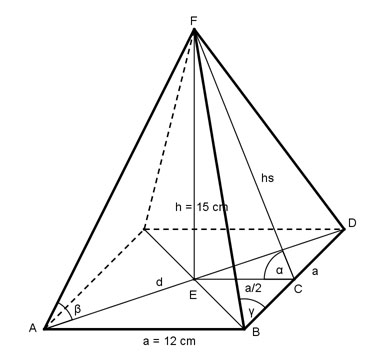

Aufgabe 58 Wie groß sind die Winkel α, β und γ?

Im Dreieck ECF (rechter Winkel bei E): h 15 cm tan α = ----- = ----------- = 2,5 --> α = 68,2° a/2 12/2 cm h sin α = ----- |*hs hs hs * sin α = h |:sin α h 15 cm hs = -------- = --------- = 16,2 cm sin α 0,9285 Im Dreieck BCF (rechter Winkel bei C): hs 16,2 cm tan γ = ----- = ----------- = 2,6667 a/2 12/2 cm --> γ = 69,4° Im Dreieck ABE (rechter Winkel Bei E): Das Dreieck ABE ist gleichschenklig und rechtwinklig, deswegen ist der Winkel bei A = 45°. d/2 cos 45° = ----- |*a a a * sin 45° = d/2 *2 d = 2 * a * cos 45° = 2 * 12 cm * 0,7071 = 17 cm Im Dreieck AEF (rechter Winkel bei E): h 15 cm tan β = ------ = ---------- = 1,7647 d/2 17/2 cm --> β = 60,5°